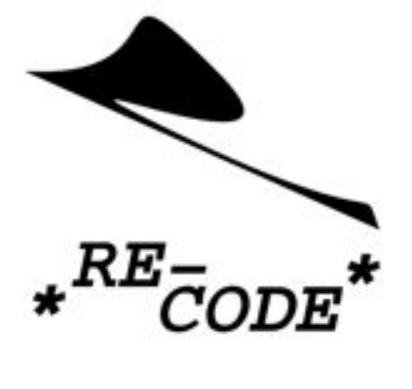
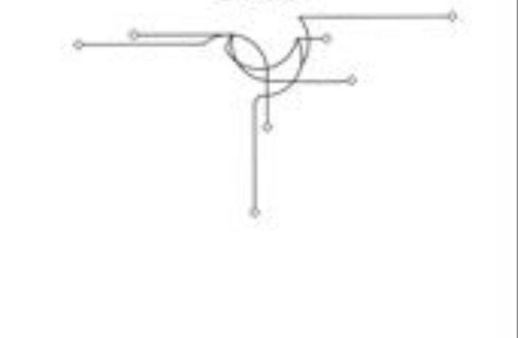

<!DOCTYPE html>
<html lang="en">
<head>
    <meta charset="UTF-8">
    <title>RE_CODE</title>
</head>
<!--<script type="text/javascript">-->
<!--    (function (doc, win) {-->
<!--        var docEl = doc.documentElement,-->
<!--            resizeEvt = 'orientationchange' in window ? 'orientationchange' : 'resize',-->
<!--            recalc = function () {-->
<!--                var clientWidth = docEl.clientWidth;-->
<!--                if (!clientWidth) return;-->
<!--                docEl.style.fontSize = 20 * (clientWidth / 320) + 'px';//其中“20”根据你设置的html的font-size属性值做适当的变化-->
<!--            };-->

<!--        if (!doc.addEventListener) return;-->
<!--        win.addEventListener(resizeEvt, recalc, false);-->
<!--        doc.addEventListener('DOMContentLoaded', recalc, false);-->
<!--    })(document, window);-->
<!--</script>-->
<style>
    body {
        margin: 0;
    }

    /*.all{*/
    /*    width: 1080rem;*/
    /*    height: 1920rem;*/

    /*}*/
    .top {
        /*background-color: aqua;*/
        height: 45%;
        width: 100%;
    }

    .bottom {
        /*background-color: #007bff;*/
        height: 45%;
        width: 100%;
    }

    .button {
        font-family: 'Arial Black';
        font-weight: bold;
        text-align: center;
    }
    .geeks {
        position: absolute;
        top: 50%;
        left: 50%;
        transform: translate(-50%, -50%);
        font-size: 30px;
        font-weight: 800;
        letter-spacing: 5px;
    }

    .geeks span {
        animation: animate 3s linear infinite;
    }

    .geeks span:nth-child(1) {
        animation-delay: 0s;
    }

    .geeks span:nth-child(2) {
        animation-delay: 0.1s;
    }

    .geeks span:nth-child(3) {
        animation-delay: 0.2s;
    }

    .geeks span:nth-child(4) {
        animation-delay: 0.3s;
    }

    .geeks span:nth-child(5) {
        animation-delay: 0.4s;
    }

    .geeks span:nth-child(6) {
        animation-delay: 0.5s;
    }

    .geeks span:nth-child(7) {
        animation-delay: 0.6s;
    }

    .geeks span:nth-child(8) {
        animation-delay: 0.9s;
    }

    .geeks span:nth-child(9) {
        animation-delay: 0.8s;
    }

    .geeks span:nth-child(10) {
        animation-delay: 0.9s;
    }

    .geeks span:nth-child(11) {
        animation-delay: 1s;
    }

    .geeks span:nth-child(12) {
        animation-delay: 1.1s;
    }

    .geeks span:nth-child(13) {
        animation-delay: 1.2s;
    }

    @keyframes animate {
        0% {
            filter: blur(0);
        }
        40% {
            filter: blur(20px);
        }
        80% {
            filter: blur(0);
        }
        100% {
            filter: blur(0);
        }
    }

</style>
<body>
<div class="all">
<!--    <div class="top"></div>-->
<!--    <div class="button">-TAD-</div>-->
<!--    <div class="bottom"></div>-->
</div>
</body>
<script src="p5.js"></script>
<script>
    //https://p5js.org/zh-Hans/download/support.html
    //https://forum.processing.org/two/
    function setup() {
        createCanvas(640, 480);
    }

    function draw() {
        if (mouseIsPressed) {
            fill(0);
        } else {
            fill(255);
        }
        ellipse(mouseX, mouseY, 80, 80);
    }

</script>
</html>